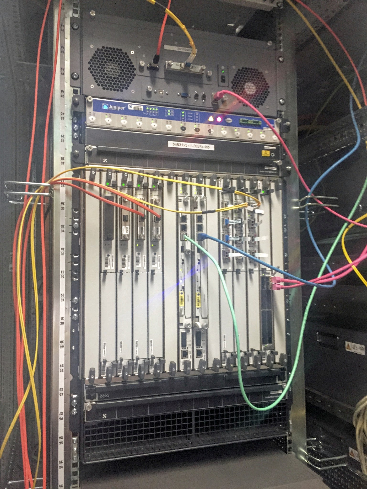
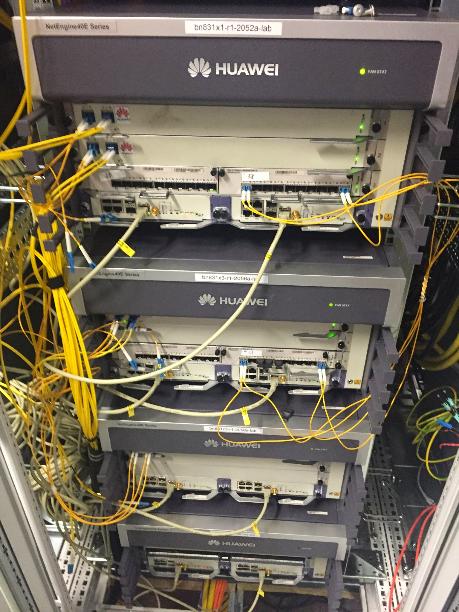

Pictures from the 100G DWDM interop lab
These are some pictures from the coherent 100G DWDM interoperability tests performed in the TeraStream lab. Read the full story and look at the router configuration.
1 1500km fiber test path
All tests have been completed over a DWDM system in our lab. It can be slightly reconfigured but have been at least 1500km in all the tests.
The logical topology of our 1600km fiber path 
It's amplified with these EDFAs every 80km:

No RAMANs! Here's the whole amp rack:
The 1600km of fiber rolls
In a previous, slightly less carrier-grade, incarnation:
2 Router DWDM linecards
2.1 Juniper
The first Juniper implementation was a pure beta build with the optical parts in a separate chassis and grey 100G-SR10 link back to the MX960. It looks more like a transponder but management happened exclusively from the router and the components could later simply be integrated on a linecard instead of in a separate chassis. I believe four of these were built all in all of which two three (one broke, so we got a replacement) ended up with us.

Juniper have since released a proper linecard. It's a single port 100G card and instead of utilizing a CFP they have shrunk it down to a CFP2. Specifically CFP2-ACO which means it's analog and all the DSP magic is happening on the linecard unlike the earlier CFP which had pretty beefy DSPs of its own.
We still have one of the first generation "transponders" from Juniper in use as part of a PNI (private peering link) with NorduNet (AS2603). NorduNet is running Juniper routers and they have it connected to their router in Hamburg which is then linked over a piece of metro dark fibre to a TeraStream Nokia 7750 router.
2.2 Nokia
Nokia, previously Alcatel-Lucent (previously TiMetra), were one of the early partners behind the 100G DWDM standard and were also early with putting together a line card for their 7750 router:
They are now also rolling new 2-port cards for the 7950, which we're about to install. Here's me with one of those cards:
And installed in router (the one on the left - the right one is for grey optics):
2.3 Cisco
Cisco has a couple of different generations. Here's one of the first for the ASR9000 router, which has since been discontinued:

There is also a transponder for the ONS15454 that integrates with the router, much like the Juniper solution, so the DWDM configuration can be managed by the router but the optical components are situated in a ONS15454 chassis. I don't currently have a picture of this however.
Laserbeak is Cisco's latest addition to the family of 100G cards that support the standard, here in the middle (also with 20x10GE ports);
The Laserbeak card also uses the more modern CFP2-ACO optical modules.
2.4 Huawei
Last but not least we have stack of Huawei routers. The 2-port card in the first two slots is the 100G card: 